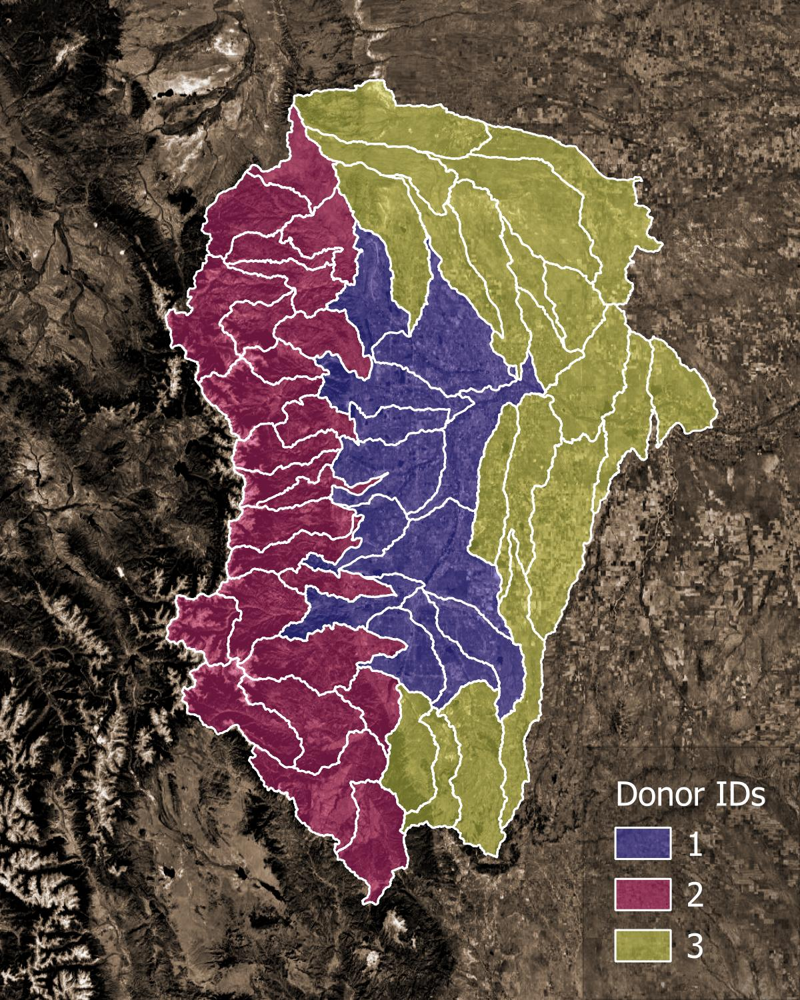

Parameter Regionalization#
Introduction#
The parameter regionalization process assigns pairs of divides as donors and receivers. Donor divides are calibrated divides. Receiver divides are uncalibrated divides that will have parameters assigned to them from their donor. Donor receiver pairings are assigned based on the proximity of divides in both spatial and physiographic parameter space. Several methods are provided for pairing, including clustering methods (kmeans, kmedoids, HDBSCAN, URF), distance methods (Gower, URF), and spatial proximity. Typically, spatial proximity is used as a fallback method for any unpaired receivers after the main pairing (clustering or distance) method is applied.
- Required input:
Divide attribute datasets
Selection of specific attributes from each dataset to use for pairing
NextGen divides hydrofabric (divides layer)
Calibration and validation statistics for all calibration basins within the VPU (and nearby VPUs) for each candidate formulation.
Configuration file (config_parreg.yaml) specifying pairing methods, attributes to use, donor screening criteria, and other pairing options.
See the Input Data page for details.
Process#

Figure 1. Example of donor catchments (colors) and receiver catchments (translucent).#
Parameter regionalization begins with identifying valid donors in the VPU, based on the calibration metrics file defined by
general.calval_stats_fileinconfig_general.yaml, and the donor selection/screening criteria defined in thedonorsection inconfig_parreg.yaml. In addition, the attribute datasets are checked to assess if all donors and receivers in each VPU are present. The percent nan values in the attribute dataset are recorded. See example plot at Missing Attribute Barchart.All primary attributes, as selected with
attr_listorattr_select_filefor each dataset specified in theconfig_parreg.yaml, are used to calculate catchment similarity when pairing receivers with donors. For distance-based methods, if some receivers remain unpaired after the first pass using a full attribute set, a second pass is performed using a reduced set of attributes defined bybase_attr_listinconfig_parreg.yaml.For each formulation:
Split receivers into cohorts with the same non-nan attributes. For example, cohort 1 uses
ngen_mp,ngen_slope_1km, andhlr_PETbut cohort 2 only usesngen_slope_1kmandhlr_PETbecause all of the receivers in cohort 2 are missing values forngen_mp.Similarly, receivers are grouped into snowy and non-snowy cohorts. Snowy receivers are paired only with snowy donors, and non-snowy receivers only with non-snowy donors. The snowy/non-snowy classification is determined by the
snow_coversettings inconfig_parreg.yaml.For each cohort:
Standardize attribute values (0 mean, unit variance), and remove attribute correlations with a Principal Component Analysis (PCA).
Apply a distance or clustering algorithm (see method specifics below) to assign a donor to each receiver.
distance methods (gower, urf): assign nearest donor in attribute space to each receiver
First pass: use all primary attributes.
Second pass (if needed): use only
base attributes.
clustering methods (kmeans, kmedoids, hdbscan, birch): using all primary attributes, assign the spatially nearest donor within the same cluster to each receiver.
In addition to the final donor, up to
n_donor_maxclosest donors are also recorded in the pair results for future reference (e.g., for ensemble applications).
Any receivers that remain unpaired after the preceding steps are assigned their nearest donor in geographic space using the proximity method.
{kind=link}

Figure 1. Example of final pairings. Each receiver catchment is assigned a donor catchment.#
Pairing Methods#
Currentlly a total of six main pairing methods are supported, in addition to the proximity method used as a fallback for any unpaired receivers after the main pairing method is applied:
Gower (distance-based)
URF (unsupervised random forest, distance-based)
KMeans (clustering-based)
KMedoids (clustering-based)
HDBSCAN (clustering-based)
BIRCH (clustering-based)
Distance-based methods#
Gower This method calculates the Gower’s distance between each receiver and all potential donors using the PCA-transformed attribute data, with weights for each principal component set according to the percentage of variance it explains. Each receiver is assigned the donor with the lowest Gower’s distance. Donors are identified by iteratively searching in neighborhoods of increasing radius until a candidate meeting both attribute and spatial distance criteria is found.
Type: attribute distance metric
How it works: Calculates a weighted distance between receivers and donors based on PCA-transformed attributes.
Pros: Simple to understand and implement; effective for mixed data types.
Cons: May not capture complex relationships; sensitive to scaling and outliers.
URF This method builds an unsupervised random forest from the raw or PCA-transformed attribute data. It begins by constructing a joint distribution of the explanatory variables and drawing samples from this distribution to create synthetic data. The real and synthetic data are combined into a single dataset, with a label indicating the source of each observation. Next, a random forest classifier is trained to distinguish real observations from synthetic ones. The resulting model produces a similarity/dissimilarity matrix, which is used to assign donors to receivers using the same iterative approach as the Gower method.
Type: Ensemble, tree-based
How it works: Constructs a random forest to create a similarity/dissimilarity matrix based on how often pairs of points end up in the same leaf node across all trees.
Pros: Captures complex relationships; robust to noise.
Cons: Computationally intensive; results can be harder to interpret.
Clustering-based methods#
KMeans This pairing method clusters the PCA-transformed attribute data using the kmeans clustering algorithm. After clustering, receivers with one donor in their cluster select that donor. Receivers with no donors in their cluster, select their nearest donor (in geographical space). Clusters with more than one donor in them are sub-clustered, and the process is repeated until all receivers are paired with donors.
Type: Centroid-based, partitioning method
How it works: Partitions the data into k clusters by minimizing the sum of squared distances between points and their cluster centroids.
Pros: Simple, fast, widely used.
Cons: Sensitive to outliers, assumes roughly spherical clusters, requires specifying the number of clusters in advance. In our implementation, the latter is addressed by iteratively sub-clustering into 2 clusters each time until all receivers are paired.
KMedoids This pairing method clusters the PCA-transformed attribute data using the kmedoids clustering algorithm. Once clustering is complete, it proceeds with the same approach as kmeans.
Type: Partitioning, medoid-based
How it works: Similar to KMeans, but uses actual data points (medoids) as cluster centers instead of means. Minimizes the sum of dissimilarities between points and their medoid.
Pros: More robust to outliers and noise than KMeans.
Cons: Slower than KMeans, still requires k to be specified (but addressed by iterative sub-clustering).
HDBSCAN This pairing method clusters the PCA-transformed attribute data using the hdbscan - Hierarchical Density-Based Spatial Clustering of Applications with Noise clustering algorithm. Once clustering is complete, it proceeds with the same approach as kmeans.
Type: Density-based, hierarchical
How it works: Builds a hierarchy of clusters based on varying density thresholds and extracts stable clusters. Can detect clusters of varying shapes and sizes.
Pros: Does not require specifying the number of clusters; handles noise/outliers well; detects clusters of arbitrary shapes.
Cons: Can be more complex to tune and interpret.
BIRCH This pairing method clusters the PCA-transformed attribute data using the BIRCH - Balanced Iterative Reducing and Clustering using Hierarchies clustering algorithm. Once clustering is complete, it proceeds with the same approach as kmeans.
Type: Hierarchical, tree-based
How it works: Incrementally builds a tree summarizing the data and clusters it using hierarchical methods. Can handle large datasets efficiently.
Pros: Scales well to large datasets, can be combined with other clustering algorithms for refinement.
Cons: Assumes clusters are roughly spherical; sensitive to the choice of threshold and branching factor.
Summary of differences#
Distance vs Clustering: Distance methods assign donors based on nearest neighbor in attribute space, while clustering methods group catchments in attribute space and assign donors within clusters.
Gower vs URF: Gower uses a weighted distance metric based on PCA components, while URF builds a random forest to derive a similarity matrix capturing complex relationships. URF is generally more robust to noise and can be trained using raw attributes, while Gower must rely on PCA-transformed data.
KMeans vs KMedoids: KMeans uses centroids (can be outside data), KMedoids uses actual points (more robust).
KMeans/KMedoids vs HDBSCAN/BIRCH: KMeans and KMedoids require specifying k (fixed at 2 here); HDBSCAN and BIRCH can handle variable cluster sizes and shapes and are more robust to outliers.
HDBSCAN vs BIRCH: Both hierarchical, but HDBSCAN is density-based and detects irregular clusters, while BIRCH is tree-based and designed for large datasets with roughly spherical clusters.